Git Getting Started
In this section we will learn how to install and use git in our computer.
Git Install
You can download Git for free from the following website: https://www.git-scm.com/
If you need help installing it you can watch the following video:
Using Git with Command Line
To start using Git, we are first going to open up our Command shell. For Windows, you can use Git bash, which comes included in Git for Windows. For Mac and Linux you can use the built-in terminal. The first thing we need to do, is to check if Git is properly installed:
karak10@DESKTOP-P0FANNP:/mnt/c/Users/alexi$ git --version
git version 2.25.1
If Git is installed, it should show something like git version X.Y
Configure Git
Now let Git know who you are. This is important for version control systems, as each Git commit uses this information:
karak10@DESKTOP-P0FANNP:/mnt/c/Users/alexi$ git config --global user.name "karak10"
karak10@DESKTOP-P0FANNP:/mnt/c/Users/alexi$ git config --global user.email "karak10@gmail.com"
Change the user name and e-mail address to your own. You will probably also want to use this when registering to GitHub later on.
Note: Use global to set the username and e-mail for every repository on your computer. If you want to set the username/e-mail for just the current repo, you can remove global. Git repository are the folders we add in our projects that keep track of the project's history, but here is a video to help you better understand how they work:
Creating Git Folder
Now, let's create a new folder for our project:
karak10@DESKTOP-P0FANNP:/mnt/c/Users/alexi/Desktop$ mkdir myproject
karak10@DESKTOP-P0FANNP:/mnt/c/Users/alexi/Desktop$ cd myproject
mkdir makes a new directory. cd changes the current working directory. Now that we are in the correct directory. We can start by initializing Git!
karak10@DESKTOP-P0FANNP:/mnt/c/Users/alexi/Desktop/myproject$ git init
jnhmInitialized empty Git repository in /Users/alexi/myproject/.git/


Git Adding New Files
We just created our first local Git repo. But it is empty. So let's add some files. For this example I will use a simple HTML file like this:
<!DOCTYPE html>
<html>
<head>
<title>Hello World!</title>
</head>
<body>
<h1>Hello world!</h1>
<p>This is the first file in my new Git Repo.</p>
</body>
</html>
And save it to our new folder as index.html. Let's go back to the terminal and list the files in our current working directory
karak10@DESKTOP-P0FANNP:/mnt/c/Users/alexi/Desktop/myproject$ ls -la
.
..
.git
index.html
ls will list the files in the directory, I used the -l property so that the files are listed one under the other and the -a property so that all files are shown, even hidden ones, as you can see .git folder is hidden. We can also see that index.html is there. Let's now check the Git status and see if index.html is a part of our repo:
karak10@DESKTOP-P0FANNP:/mnt/c/Users/alexi/Desktop/myproject$ git status
On branch master
No commits yet
Untracked files:
(use "git add ..." to include in what will be committed)
index.html
nothing added to commit but untracked files present (use "git add" to track)
Now Git is aware of the file, but has not added it to our repository! Files in your Git repository folder can be in one of 2 states:
- Tracked - files that Git knows about and are added to the repository
- Untracked - files that are in your working directory, but not added to the repository
When you first add files to an empty repository, they are all untracked. To get Git to track them, you need to stage them, or add them to the staging environment. We will cover the staging environment in the next chapter.
Git Staging Environment
One of the core functions of Git is the concepts of the Staging Environment, and the Commit. As you are working, you may be adding, editing and removing files. But whenever you hit a milestone or finish a part of the work, you should add the files to a Staging Environment.
Staged files are files that are ready to be committed to the repository you are working on. We will learn more about commit shortly.
For now, we are done working with index.html. So we can add it to the Staging Environment:
karak10@DESKTOP-P0FANNP:/mnt/c/Users/alexi/Desktop/myproject$ git add index.html
The file should be Staged. Let's check the status:
karak10@DESKTOP-P0FANNP:/mnt/c/Users/alexi/Desktop/myproject$ git status
On branch master
No commits yet
Changes to be committed:
(use "git rm --cached ..." to unstage)
new file: index.html
Now the file has been added to the Staging Environment.
Git Add More than One File
You can also stage more than one file at a time. Let's add 2 more files to our working folder.
A README.md file that describes the repository (recommended for all repositories):
# hello-world
Hello World repository for this tutorial.
This is an example repository for my notes.
This repository is built step by step in my notes
A basic external style sheet (bluestyle.css):
body {
background-color: lightblue;
}
h1 {
color: navy;
margin-left: 20px;
}
And update index.html to include the stylesheet:
<!DOCTYPE html>
<html>
<head>
<title>Hello World!</title>
<link rel="stylesheet" href="bluestyle.css">
</head>
<body>
<h1>Hello world!</h1>
<p>This is the first file in my new Git Repo.</p>
</body>
</html>
Now add all files in the current directory to the Staging Environment:
karak10@DESKTOP-P0FANNP:/mnt/c/Users/alexi/Desktop/myproject$ git add --all
Using --all instead of individual filenames will stage all changes (new, modified, and deleted) files.
karak10@DESKTOP-P0FANNP:/mnt/c/Users/alexi/Desktop/myproject$ git status
On branch master
No commits yet
Changes to be committed:
(use "git rm --cached ..." to unstage)
new file: README.md
new file: bluestyle.css
new file: index.html
Now all 3 files are added to the Staging Environment, and we are ready to do our first commit.
Note: The shorthand command for git add --all is git add -A
Git Commit
Since we have finished our work, we are ready move from stage to commit for our repo.
Adding commits keep track of our progress and changes as we work. Git considers each commit change point or "save point". It is a point in the project you can go back to if you find a bug, or want to make a change. When we commit, we should always include a message. By adding clear messages to each commit, it is easy for yourself (and others) to see what has changed and when.
karak10@DESKTOP-P0FANNP:/mnt/c/Users/alexi/Desktop/myproject$ git commit -m "First release of Hello World!"
[master (root-commit) 221ec6e] First release of Hello World!
3 files changed, 26 insertions(+)
create mode 100644 README.md
create mode 100644 bluestyle.css
create mode 100644 index.html
The commit command performs a commit, and the -m "message" adds a message. The Staging Environment has been committed to our repo, with the message: "First release of Hello World!"
Git Commit without Stage
Sometimes, when you make small changes, using the staging environment seems like a waste of time. It is possible to commit changes directly, skipping the staging environment. The -a option will automatically stage every changed, already tracked file. Let's add a small update to index.html:
<!DOCTYPE html>
<html>
<head>
<title>Hello World!</title>
<link rel="stylesheet" href="bluestyle.css">
</head>
<body>
<h1>Hello world!</h1>
<p>This is the first file in my new Git Repo.</p>
<p>A new line in our file!</p>
</body>
</html>
And check the status of our repository. But this time, we will use the --short option to see the changes in a more compact way:
karak10@DESKTOP-P0FANNP:/mnt/c/Users/alexi/Desktop/myproject$ git status --short
M index.html
Short status flags are:
- ?? - Untracked files
- A - Files added to stage
- M - Modified files
- D - Deleted files
We see the file we expected is modified. So let's commit it directly:
karak10@DESKTOP-P0FANNP:/mnt/c/Users/alexi/Desktop/myproject$ git commit -a -m "Updated index.html with a new line"
[master 09f4acd] Updated index.html with a new line
1 file changed, 1 insertion(+)
The -a parameter on commit says to add all changes of tracked files and commit them.
To choose specific files to commit you can simple do this like this: git commit file1 file2 file5 -m "commit message"
So what is "stage" and what's "commit" anyway?
To "stage" is to do git add file. ext for a specific file, or git add . to affect all modified and untracked files. Files that have been added in this way are said to be "staged" and they will be included in the next "commit". The commit is a snapshot of your work created e.g. with git commit -m "I wrote something" .
So what should you expect when working with git? After you add git to your project, you will create your first file, when you do this, if you are using VSC editor the color of the file in your editor will be blue I think, I'm not really sure but it will be colored, and there will be the letter U next to it, which stands for "Untracked". After you edit and save your file, the file will change color and the letter next to it will change to M, which stands for "Modified", after that happens you should use the (git add) command to stage the file, and then the (git commit) to commit the file. After you have commited the file it will change it's color back to normal white color without any letter next to it, until you make changes to the file again. So, your main project has been saved after your first commit, the directory you have your files inside is not where your project is saved, your project is kept saved by git, you can do anything to those files you have in your directory, it doesn't matter, because you can always restore back to what your project was when you made your first commit. After changing the files in your directory, you will have to stage them again before you can commit them again.
Git Help
If you are having trouble remembering commands or options for commands, you can use Git help. There are a couple of different ways you can use the help command in command line:
- git command -help - See all the available options for the specific command
- git help -all - See all possible commands
You can also use --help instead of -help to open the relevant Git manual page.
Using the help --all command will display a very long list of commands. If you find yourself stuck in the list view, SHIFT + G to jump to the end of the list, then q to exit the view.
Working with Git Branches
In Git, a branch is a new/separate version of the main repository. Let's say you have a large project, and you need to update the design on it. How would that work without and with Git?
Without Git:
- Make copies of all the relevant files to avoid impacting the live version
- Start working with the design and find that code depend on code in other files, that also need to be changed!
- Make copies of the dependant files as well. Making sure that every file dependency references the correct file name
- EMERGENCY! There is an unrelated error somewhere else in the project that needs to be fixed ASAP!
- Save all your files, making a note of the names of the copies you were working on
- Work on the unrelated error and update the code to fix it
- Go back to the design, and finish the work there
- Copy the code or rename the files, so the updated design is on the live version
- (2 weeks later, you realize that the unrelated error was not fixed in the new design version because you copied the files before the fix)
With Git:
- With a new branch called new-design, edit the code directly without impacting the main branch
- EMERGENCY! There is an unrelated error somewhere else in the project that needs to be fixed ASAP!
- Create a new branch from the main project called small-error-fix
- Fix the unrelated error and merge the small-error-fix branch with the main branch
- You go back to the new-design branch, and finish the work there
- Merge the new-design branch with main (getting alerted to the small error fix that you were missing)
Branches allow you to work on different parts of a project without impacting the main branch. When the work is complete, a branch can be merged with the main project. You can even switch between branches and work on different projects without them interfering with each other. Branching in Git is very lightweight and fast!
New Git Branch
Lets add some new features to our index.html page. We are working in our local repository, and we do not want to disturb or possibly wreck the main project. So we create a new branch:
karak10@DESKTOP-P0FANNP:/mnt/c/Users/alexi/Desktop/myproject$ git branch hello-world-images
Now we created a new branch called "hello-world-images" Let's confirm that we have created a new branch:
karak10@DESKTOP-P0FANNP:/mnt/c/Users/alexi/Desktop/myproject$ git branch
hello-world-images
* master
Git creates a master branch once you've done your first commit. You cannot create a branch if the master branch doesn't first exist, you need to do your first commit, else there's nothing to have a branch for if there's no code in the repository.
We can see the new branch with the name "hello-world-images", but the * beside master specifies that we are currently on that branch. checkout is the command used to check out a branch. Moving us from the current branch, to the one specified at the end of the command:
karak10@DESKTOP-P0FANNP:/mnt/c/Users/alexi/Desktop/myproject$ git checkout hello-world-images
Switched to branch 'hello-world-images'
Now we have moved our current workspace from the master branch, to the new branch Open your favourite editor and make some changes. For this example, we added an image (img_hello_world.jpg) to the working folder and a line of code in the index.html file:
<!DOCTYPE html>
<html>
<head>
<title>Hello World!</title>
<link rel="stylesheet" href="bluestyle.css">
</head>
<body>
<h1>Hello world!</h1>
<div><img src="img_hello_world.jpg" alt="Hello World from Space"
style="width:100%;max-width:960px"></div>
<p>This is the first file in my new Git Repo.</p>
<p>A new line in our file!</p>
</body>
</html>
We have made changes to a file and added a new file in the working directory (same directory as the main branch). Now check the status of the current branch:
karak10@DESKTOP-P0FANNP:/mnt/c/Users/alexi/Desktop/myproject$ git status
On branch hello-world-images
Changes not staged for commit:
(use "git add ..." to update what will be committed)
(use "git restore ..." to discard changes in working directory)
modified: index.html
Untracked files:
(use "git add ..." to include in what will be committed)
img_hello_world.jpg
no changes added to commit (use "git add" and/or "git commit -a")
So let's go through what happens here:
- There are changes to our index.html, but the file is not staged for commit
- img_hello_world.jpg is not tracked
So we need to add both files to the Staging Environment for this branch:
karak10@DESKTOP-P0FANNP:/mnt/c/Users/alexi/Desktop/myproject$ git add --all
Using --all instead of individual filenames will Stage all changed (new, modified, and deleted) files. Lets check the status of the branch:
karak10@DESKTOP-P0FANNP:/mnt/c/Users/alexi/Desktop/myproject$ git status
On branch hello-world-images
Changes to be committed:
(use "git restore --staged ..." to unstage)
new file: img_hello_world.jpg
modified: index.html
We are happy with our changes. So we will commit them to the branch:
karak10@DESKTOP-P0FANNP:/mnt/c/Users/alexi/Desktop/myproject$ git commit -m "Added image to Hello World"
[hello-world-images 0312c55] Added image to Hello World
2 files changed, 1 insertion(+)
create mode 100644 img_hello_world.jpg
Now we have a new branch, that is different from the master branch.
Note: Using the -b option on checkout will create a new branch, and move to it, if it does not exist
Switching Between Branches
Now let's see just how quick and easy it is to work with different branches, and how well it works. We are currently on the branch hello-world-images. We added an image to this branch, so let's list the files in the current directory:
karak10@DESKTOP-P0FANNP:/mnt/c/Users/alexi/Desktop/myproject$ ls
README.md bluestyle.css img_hello_world.jpg index.html
We can see the new file img_hello_world.jpg, and if we open the html file, we can see the code has been altered. All is as it should be. Now, let's see what happens when we change branch to master
karak10@DESKTOP-P0FANNP:/mnt/c/Users/alexi/Desktop/myproject$ git checkout master
Switched to branch 'master'
The new image is not a part of this branch. List the files in the current directory again:
karak10@DESKTOP-P0FANNP:/mnt/c/Users/alexi/Desktop/myproject$ ls
README.md bluestyle.css index.html
img_hello_world.jpg is no longer there! And if we open the html file, we can see the code reverted to what it was before the alteration. See how easy it is to work with branches? And how this allows you to work on different things?
Emergency Branch
Now imagine that we are not yet done with hello-world-images, but we need to fix an error on master. I don't want to mess with master directly, and I do not want to mess with hello-world-images, since it is not done yet. So we create a new branch to deal with the emergency:
karak10@DESKTOP-P0FANNP:/mnt/c/Users/alexi/Desktop/myproject$ git checkout -b emergency-fix
Switched to a new branch 'emergency-fix'
Now we have created a new branch from master, and changed to it. We can safely fix the error without disturbing the other branches. Let's fix our imaginary error:
<!DOCTYPE html>
<html>
<head>
<title>Hello World!</title>
<link rel="stylesheet" href="bluestyle.css">
</head>
<body>
<h1>Hello world!</h1>
<p>This is the first file in my new Git Repo.</p>
<p>This line is here to show how merging works.</p>
</body>
</html>
We have made changes in this file, and we need to get those changes to the master branch. Check the status:
karak10@DESKTOP-P0FANNP:/mnt/c/Users/alexi/Desktop/myproject$ git status
On branch emergency-fix
Changes not staged for commit:
(use "git add ..." to update what will be committed)
(use "git restore ..." to discard changes in working directory)
modified: index.html
no changes added to commit (use "git add" and/or "git commit -a")
stage the file, and commit:
karak10@DESKTOP-P0FANNP:/mnt/c/Users/alexi/Desktop/myproject$ git add index.html
karak10@DESKTOP-P0FANNP:/mnt/c/Users/alexi/Desktop/myproject$ git commit -m "updated index.html with emergency fix"
[emergency-fix dfa79db] updated index.html with emergency fix
1 file changed, 1 insertion(+), 1 deletion(-)
Now we have a fix ready for master, and we need to merge the two branches. And that's what we will be learning in the next section, how to merge branches.
Git Branch Merge
We have the emergency fix ready, and so let's merge the master and emergency-fix branches. First, we need to change to the master branch:
karak10@DESKTOP-P0FANNP:/mnt/c/Users/alexi/Desktop/myproject$ git checkout master
Switched to branch 'master'
Now we merge the current branch (master) with emergency-fix:
karak10@DESKTOP-P0FANNP:/mnt/c/Users/alexi/Desktop/myproject$ git merge emergency-fix
Updating 09f4acd..dfa79db
Fast-forward
index.html | 2 +-
1 file changed, 1 insertion(+), 1 deletion(-)
Since the emergency-fix branch came directly from master, and no other changes had been made to master while we were working, Git sees this as a continuation of master. So it can "Fast-forward", just pointing both master and emergency-fix to the same commit.
As master and emergency-fix are essentially the same now, we can delete emergency-fix, as it is no longer needed:
karak10@DESKTOP-P0FANNP:/mnt/c/Users/alexi/Desktop/myproject$ git branch -d emergency-fix
Deleted branch emergency-fix (was dfa79db).
Merge Conflict
Now we can move over to hello-world-images and keep working. Add another image file (img_hello_git.jpg) and change index.html, so it shows it:
karak10@DESKTOP-P0FANNP:/mnt/c/Users/alexi/Desktop/myproject$ git checkout hello-world-images
Switched to branch 'hello-world-images'
<!DOCTYPE html>
<html>
<head>
<title>Hello World!
<link rel="stylesheet" href="bluestyle.css">
</head>
<body>
<h1>Hello world!</h1>
<div><img src="img_hello_world.jpg" alt="Hello World from Space" style="width:100%;max-width:960px"></div>
<p>This is the first file in my new Git Repo.</p>
<p>A new line in our file!</p>
<div><img src="img_hello_git.jpg" alt="Hello Git" style="width:100%;max-width:640px"></div>
</body>
</html>
Now, we are done with our work here and can stage and commit for this branch:
karak10@DESKTOP-P0FANNP:/mnt/c/Users/alexi/Desktop/myproject$ git add --all
karak10@DESKTOP-P0FANNP:/mnt/c/Users/alexi/Desktop/myproject$ git commit -m "added new image"
[hello-world-images 1f1584e] added new image
2 files changed, 1 insertion(+)
create mode 100644 img_hello_git.jpg
We see that index.html has been changed in both branches. Now we are ready to merge hello-world-images into master. But what will happen to the changes we recently made in master?
karak10@DESKTOP-P0FANNP:/mnt/c/Users/alexi/Desktop/myproject$ git checkout master
karak10@DESKTOP-P0FANNP:/mnt/c/Users/alexi/Desktop/myproject$ git merge hello-world-images
Auto-merging index.html
CONFLICT (content): Merge conflict in index.html
Automatic merge failed; fix conflicts and then commit the result.
The merge failed, as there is conflict between the versions for index.html. Let us check the status:
karak10@DESKTOP-P0FANNP:/mnt/c/Users/alexi/Desktop/myproject$ git status
On branch master
You have unmerged paths.
(fix conflicts and run "git commit")
(use "git merge --abort" to abort the merge)
Changes to be committed:
new file: img_hello_git.jpg
new file: img_hello_world.jpg
Unmerged paths:
(use "git add ..." to mark resolution)
both modified: index.html
This confirms there is a conflict in index.html, but the image files are ready and staged to be committed. So we need to fix that conflict. Open the file in your editor:
<!DOCTYPE html><
<head>
<title>Hello World!</title>
<link rel="stylesheet" href="bluestyle.css">
</head>
<body>
<h1>Hello world!</h1>
<div><img src="img_hello_world.jpg" alt="Hello World from Space" style="width:100%;max-width:960px"></div>
<p>This is the first file in my new Git Repo.</p>
<<<<<<< HEAD (Current Change)
<p>This line is here to show how merging works.</p>
=======
<p>A new line in our file!</p>
<div><img src="img_hello_git.jpg" alt="Hello Git" style="width:100%;max-width:640px"></div>
>>>>>>> hello-world-images (Incoming Change)
</body>
</html>
That's what your file should look like if you are using VSC editor, if you are using something else it may not have those options at the top and you will probably have to make the changes your self. So, let's accept both changes:
<!DOCTYPE html>
<html>
<head>
<title>Hello World!</title>
<link rel="stylesheet" href="bluestyle.css">
</head>
<body>
<h1>Hello world!</h1>
<div><img src="img_hello_world.jpg" alt="Hello World from Space" style="width:100%;max-width:960px"></div>
<p>This is the first file in my new Git Repo.</p>
<p>This line is here to show how merging works.</p>
<p>A new line in our file!</p>
<div><img src="img_hello_git.jpg" alt="Hello Git" style="width:100%;max-width:640px"></div>
</body>
</html>
Now we can stage index.html and check the status:
karak10@DESKTOP-P0FANNP:/mnt/c/Users/alexi/Desktop/myproject$ git add index.html
karak10@DESKTOP-P0FANNP:/mnt/c/Users/alexi/Desktop/myproject$ git status
On branch master
All conflicts fixed but you are still merging.
(use "git commit" to conclude merge)
Changes to be committed:
new file: img_hello_git.jpg
new file: img_hello_world.jpg
modified: index.html
The conflict has been fixed, and we can use commit to conclude the merge:
karak10@DESKTOP-P0FANNP:/mnt/c/Users/alexi/Desktop/myproject$ git commit -m "merged with
hello-world-images after fixing conflicts"
[master e0b6038] merged with hello-world-images after fixing conflicts
And delete the hello-world-images branch:
karak10@DESKTOP-P0FANNP:/mnt/c/Users/alexi/Desktop/myproject$ git branch -d hello-world-images
Deleted branch hello-world-images (was 1f1584e).
Now that you have a better understanding of how branches and merging works, it's time to start working with a remote repository!
GitHub Getting Started
So, first thing you gotta do is create an account in Github. Remember to use the same e-mail address you used in the Git config. After you do this, you need to create a Repository inside Github:
While creating your repository there are few options you can choose, we may go over those options in more detail later, but for now they don't really matter. Just choose if you want you project to be public or not, and you can also add a README file if you want, this file is used to write information about the project or could also be used to keep notes and other stuff inside, it's good to have a file like this in all your repositories.
Push Local Repository to GitHub
Since we have already set up a local Git repo, we are going to push that to GitHub:
Copy the URL, or click the clipboard marked in the image above. Then paste it in the following command:
karak10@DESKTOP-P0FANNP:/mnt/c/Users/alexi/Desktop/myproject$ git remote add origin url
git remote add origin URL specifies that you are adding a remote repository, with the specified URL, as an origin to your local Git repo. So, "origin" is the default remote repository, just like how master is the default branch, "origin" is a shorthand name for the remote repository that a project was originally cloned from. So, what do I mean by "clone", in this tutorial we first created a local repository and then connected it to Github, so it did not have a remote repository till now. Usually however, people first create their remote repository in Github, and then use the git clone command to clone the repository in their machine.
Now we are going to push our master branch to the origin url, and set it as the default remote branch (which also is named master):
karak10@DESKTOP-P0FANNP:/mnt/c/Users/alexi/Desktop/myproject$ git push --set-upstream origin master
Enumerating objects: 22, done.
Counting objects: 100% (22/22), done.
Delta compression using up to 16 threads
Compressing objects: 100% (22/22), done.
Writing objects: 100% (22/22), 92.96 KiB | 23.24 MiB/s, done.
Total 22 (delta 11), reused 0 (delta 0), pack-reused 0
remote: Resolving deltas: 100% (11/11), done.
To https://github.com/w3schools-test/hello-world.git
* [new branch] master -> master
Branch 'master' set up to track remote branch 'master' from 'origin'.
Since this is the first time you are connecting to GitHub, you will get some kind of notification to authenticate this connection. So, in the past you could just write your Github username and password and this would work, now however you gotta create a personal access token to use as the password instead, to create this token you should enter settings, then click Developer settings, and then there should be Personal access tokens, you create one, set what permissions a person using this token should have, what expire date the token should have, and after this you can copy the key, and paste it inside the password input. To paste something inside the terminal you should right click, that's how it's done for me at least.
That's how you connect to Github using HTTPS, if you are using SSH you should set a SSH key in your machine, so if you want to use SSH you should search for a tutorial to learn how to do this.
Now, go back into GitHub and see that the repository has been updated:
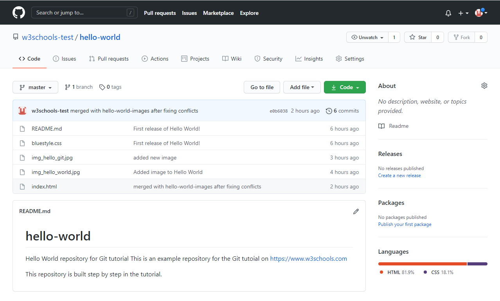To change Git remote URL you can use the git remote set-url (remote-name) (url). You can add multiple remote repositories to your project, you aren't limited to just one. Your permissions over each repository depend on the access token you used, you could for example give an access token to a friend so that he can edit your remote repository on his own machine and only give him certain permissions over it, this provides security for your repository and is very useful when working in big teams.
Edit Code in GitHub
In addition to being a host for Git content, GitHub has a very good code editor.
Let's try to edit the README.md file in GitHub. Just click the edit button:
Add some changes to the code, and then commit the changes. For now, we will "Commit directly to the master branch". Remember to add a description for the commit:
So that's how we edit code directly in GitHub. In the next section we will learn how we can now pull this project from our remote repository to our local repository.
How to pull from GitHub
When working as a team on a project, it is important that everyone stays up to date. Any time you start working on a project, you should get the most recent changes to your local copy. With Git, you can do that with pull.
pull is a combination of 2 different commands:
- fetch
- merge
Let's take a closer look into how fetch, merge, and pull works.
Git Fetch
fetch gets all the change history of a tracked branch/repo. So, on your local Git, fetch updates to see what has changed on GitHub:
karak10@DESKTOP-P0FANNP:/mnt/c/Users/alexi/Desktop/myproject$ git fetch origin
remote: Enumerating objects: 5, done.
remote: Counting objects: 100% (5/5), done.
remote: Compressing objects: 100% (3/3), done.
remote: Total 3 (delta 2), reused 0 (delta 0), pack-reused 0
Unpacking objects: 100% (3/3), 733 bytes | 3.00 KiB/s, done.
From https://github.com/w3schools-test/hello-world
e0b6038..d29d69f master -> origin/master
Now that we have the recent changes, we can check our status:
karak10@DESKTOP-P0FANNP:/mnt/c/Users/alexi/Desktop/myproject$ git status
On branch master
Your branch is behind 'origin/master' by 1 commit, and can be fast-forwarded.
(use "git pull" to update your local branch)
nothing to commit, working tree clean
We are behind the origin/master by 1 commit. That should be the updated README.md, but lets double check by viewing the log:
karak10@DESKTOP-P0FANNP:/mnt/c/Users/alexi/Desktop/myproject$ git log origin/master
commit d29d69ffe2ee9e6df6fa0d313bb0592b50f3b853 (origin/master)
Author: w3schools-test <77673807+w3schools-test@users.noreply.github.com>
Date: Fri Mar 26 14:59:14 2021 +0100
Updated README.md with a line about GitHub
commit e0b6038b1345e50aca8885d8fd322fc0e5765c3b (HEAD -> master)
Merge: dfa79db 1f1584e
Author: w3schools-test
Date: Fri Mar 26 12:42:56 2021 +0100
merged with hello-world-images after fixing conflicts
...
...
That looks as expected, but we can also verify by showing the differences between our local master and origin/master:
karak10@DESKTOP-P0FANNP:/mnt/c/Users/alexi/Desktop/myproject$ git diff origin/master
diff --git a/README.md b/README.md
index 23a0122..a980c39 100644
--- a/README.md
+++ b/README.md
@@ -2,6 +2,4 @@
Hello World repository for Git tutorial
This is an example repository for the Git tutoial on https://www.w3schools.com
-This repository is built step by step in the tutorial.
-
-It now includes steps for GitHub
+This repository is built step by step in the tutorial.
\ No newline at end of file
That looks precisely as expected! Now we can safely merge.
Git Merge
merge combines the current branch, with a specified branch, just like I explained in a previous section. We have confirmed that the updates are as expected, and we can merge our current branch (master) with origin/master:
karak10@DESKTOP-P0FANNP:/mnt/c/Users/alexi/Desktop/myproject$ git merge origin/master
Updating e0b6038..d29d69f
Fast-forward
README.md | 4 +++-
1 file changed, 3 insertions(+), 1 deletion(-)
Check our status again to confirm we are up to date:
karak10@DESKTOP-P0FANNP:/mnt/c/Users/alexi/Desktop/myproject$ git status
On branch master
Your branch is up to date with 'origin/master'.
nothing to commit, working tree clean
There! Your local git is up to date!
Git Pull
But what if you just want to update your local repository, without going through all those steps?
pull is a combination of fetch and merge. It is used to pull all changes from a remote repository into the branch you are working on.
Let's make another change to the Readme.md file on GitHub:
Use pull to update our local Git:
karak10@DESKTOP-P0FANNP:/mnt/c/Users/alexi/Desktop/myproject$ git pull origin
remote: Enumerating objects: 5, done.
remote: Counting objects: 100% (5/5), done.
remote: Compressing objects: 100% (3/3), done.
remote: Total 3 (delta 1), reused 0 (delta 0), pack-reused 0
Unpacking objects: 100% (3/3), 794 bytes | 1024 bytes/s, done.
From https://github.com/w3schools-test/hello-world
a7cdd4b..ab6b4ed master -> origin/master
Updating a7cdd4b..ab6b4ed
Fast-forward
README.md | 2 ++
1 file changed, 2 insertions(+)
That is how you keep your local Git up to date from a remote repository. In the next section, we will look closer at how push works on GitHub.
Push Changes to GitHub
Let's try making some changes to our local git and pushing them to GitHub.
<!DOCTYPE html>
<html>
<head>
<title>Hello World!</title>
<link rel="stylesheet" href="bluestyle.css">
</head>
<body>
<h1>Hello world!</h1>
<div><img src="img_hello_world.jpg" alt="Hello World from Space" style="width:100%;max-width:640px"></div>
<p>This is the first file in my new Git Repo.</p>
<p>This line is here to show how merging works.</p>
<div><img src="img_hello_git.jpg" alt="Hello Git" style="width:100%;max-width:640px"></div>
</body>
</html>
Commit the changes:
karak10@DESKTOP-P0FANNP:/mnt/c/Users/alexi/Desktop/myproject$ git commit -a -m "Updated index.html. Resized image"
[master e7de78f] Updated index.html. Resized image
1 file changed, 1 insertion(+), 1 deletion(-)
And check the status:
karak10@DESKTOP-P0FANNP:/mnt/c/Users/alexi/Desktop/myproject$ git status
On branch master
Your branch is ahead of 'origin/master' by 1 commit.
(use "git push" to publish your local commits)
nothing to commit, working tree clean
Now push our changes to our remote origin:
karak10@DESKTOP-P0FANNP:/mnt/c/Users/alexi/Desktop/myproject$ git push origin
Enumerating objects: 9, done.
Counting objects: 100% (8/8), done.
Delta compression using up to 16 threads
Compressing objects: 100% (5/5), done.
Writing objects: 100% (5/5), 578 bytes | 578.00 KiB/s, done.
Total 5 (delta 3), reused 0 (delta 0), pack-reused 0
remote: Resolving deltas: 100% (3/3), completed with 3 local objects.
To https://github.com/w3schools-test/hello-world.git
5a04b6f..facaeae master -> master
Go to GitHub, and confirm that the repository has a new commit:
How to create a new Branch in Github
On GitHub, access your repository and click the "master" branch button. There you can create a new Branch. Type in a descriptive name, and click Create branch:
The branch should now be created and active. You can confirm which branch you are working on by looking at the branch button. See that it now says "html-skeleton" instead of "main"?
Start working on an existing file in this branch. Click the "index.html" file and start editing. After you have finished editing the file, you can click the "Preview changes" tab to see the changes you made highlighted:
If you are happy with the change, add a comment that explains what you did, and click Commit changes. You now have a new branch on GitHub, updated with some changes!
Pulling a Branch from GitHub
So, we now are back in our local Git and want to continue working on our project. First lets pull from our GitHub repository again so that our code is up-to-date:
karak10@DESKTOP-P0FANNP:/mnt/c/Users/alexi/Desktop/myproject$ git pull
remote: Enumerating objects: 5, done.
remote: Counting objects: 100% (5/5), done.
remote: Compressing objects: 100% (3/3), done.
remote: Total 3 (delta 2), reused 0 (delta 0), pack-reused 0
Unpacking objects: 100% (3/3), 851 bytes | 9.00 KiB/s, done.
From https://github.com/w3schools-test/hello-world
* [new branch] html-skeleton -> origin/html-skeleton
Already up to date.
Now our main branch is up todate. And we can see that there is a new branch available on GitHub. Do a quick status check:
karak10@DESKTOP-P0FANNP:/mnt/c/Users/alexi/Desktop/myproject$ git status
On branch master
Your branch is up to date with 'origin/master'.
nothing to commit, working tree clean
And confirm which branches we have, and where we are working at the moment:
karak10@DESKTOP-P0FANNP:/mnt/c/Users/alexi/Desktop/myproject$ git branch
* master
So, we do not have the new branch on our local Git. But we know it is available on GitHub. So we can use the -a option to see all local and remote branches:
karak10@DESKTOP-P0FANNP:/mnt/c/Users/alexi/Desktop/myproject$ git branch -a
* master
remotes/origin/html-skeleton
remotes/origin/master
Note: branch -r is for remote branches only.
We see that the branch html-skeleton is available remotely, but not on our local git. Lets check it out:
karak10@DESKTOP-P0FANNP:/mnt/c/Users/alexi/Desktop/myproject$ git checkout html-skeleton
Switched to a new branch 'html-skeleton'
Branch 'html-skeleton' set up to track remote branch 'html-skeleton' from 'origin'.
And check if it is all up to date:
karak10@DESKTOP-P0FANNP:/mnt/c/Users/alexi/Desktop/myproject$ git pull
Already up to date.
Which branches do we have now, and where are we working from?
karak10@DESKTOP-P0FANNP:/mnt/c/Users/alexi/Desktop/myproject$ git branch
* html-skeleton
master
Now, open your favourite editor and confirm that the changes from the GitHub branch carried over. That is how you pull a GitHub branch to your local Git.
Push a Branch to GitHub
Let's try to create a new local branch, and push that to GitHub. Start by creating a branch, like we did earlier:
karak10@DESKTOP-P0FANNP:/mnt/c/Users/alexi/Desktop/myproject$ git checkout -b update-readme
Switched to a new branch 'update-readme'
And we make some changes to the README.md file. Just add a new line. So now we check the status of the current branch.
karak10@DESKTOP-P0FANNP:/mnt/c/Users/alexi/Desktop/myproject$ git status
On branch update-readme
Changes not staged for commit:
(use "git add ..." to update what will be committed)
(use "git restore ..." to discard changes in working directory)
modified: README.md
no changes added to commit (use "git add" and/or "git commit -a")
We see that README.md is modified but not added to the Staging Environment. So let's stage it and commit it:
karak10@DESKTOP-P0FANNP:/mnt/c/Users/alexi/Desktop/myproject$ git add README.md
karak10@DESKTOP-P0FANNP:/mnt/c/Users/alexi/Desktop/myproject$ git commit -m "Updated readme for GitHub Branches"
[update-readme 836e5bf] Updated readme for GitHub Branches
1 file changed, 1 insertion(+)
Now push the branch from our local Git repository, to GitHub, where everyone can see the changes:
karak10@DESKTOP-P0FANNP:/mnt/c/Users/alexi/Desktop/myproject$ git push origin update-readme
Enumerating objects: 5, done.
Counting objects: 100% (5/5), done.
Delta compression using up to 16 threads
Compressing objects: 100% (3/3), done.
Writing objects: 100% (3/3), 366 bytes | 366.00 KiB/s, done.
Total 3 (delta 2), reused 0 (delta 0), pack-reused 0
remote: Resolving deltas: 100% (2/2), completed with 2 local objects.
remote:
remote: Create a pull request for 'update-readme' on GitHub by visiting:
remote: https://github.com/w3schools-test/hello-world/pull/new/update-readme
remote:
To https://github.com/w3schools-test/hello-world.git
* [new branch] update-readme -> update-readme
Go to GitHub, and confirm that the repository has a new branch:
In GitHub, we can now see the changes and merge them into the master branch if we approve it. If you click the "Compare & pull request", you can go through the changes made and new files added
This comparison shows both the changes from update-readme and html-skeleton because we created the new branch FROM html-skeleton. If the changes look good, you can go forward, creating a pull request:
A pull request is how you propose changes. You can ask some to review your changes or pull your contribution and merge it into their branch. Since this is your own repository, you can merge your pull request yourself:
The pull request will record the changes, which means you can go through them later to figure out the changes made. The result should be something like this:
To keep the repo from getting overly complicated, you can delete the now unused branch by clicking "Delete branch".
An after you confirm that the changes from the previous branch were included, delete that as well:
Working using the GitHub Flow
On this page, you will learn how to get the best out of working with GitHub. The GitHub flow is a workflow designed to work well with Git and GitHub. It focuses on branching and makes it possible for teams to experiment freely, and make deployments regularly. The GitHub flow works like this:
- Create a new Branch
- Make changes and add Commits
- Open a Pull Request
- Review
- Deploy
- Merge
You should already have a good understanding of how this works from the previous chapters. This chapter focuses on understanding how the flow makes it easy for you to work together.
Create a New Branch
Branching is the key concept in Git. And it works around the rule that the master branch is ALWAYS deployable. That means, if you want to try something new or experiment, you create a new branch! Branching gives you an environment where you can make changes without affecting the main branch.
When your new branch is ready, it can be reviewed, discussed, and merged with the main branch when ready. When you make a new branch, you will (almost always) want to make it from the master branch.
Note: Keep in mind that you are working with others. Using descriptive names for new branches, so everyone can understand what is happening.
Make Changes and Add Commits
After the new branch is created, it is time to get to work. Make changes by adding, editing and deleting files. Whenever you reach a small milestone, add the changes to your branch by commit.
Adding commits keeps track of your work. Each commit should have a message explaining what has changed and why. Each commit becomes a part of the history of the branch, and a point you can revert back to if you need to.
Note: commit messages are very important! Let everyone know what has changed and why. Messages and comments make it so much easier for yourself and other people to keep track of changes.
Open a Pull Request
Pull requests are a key part of GitHub. A Pull Request notifies people you have changes ready for them to consider or review.
You can ask others to review your changes or pull your contribution and merge it into their branch.
Review
When a Pull Request is made, it can be reviewed by whoever has the proper access to the branch. This is where good discussions and review of the changes happen.
Pull Requests are designed to allow people to work together easily and produce better results together! If you receive feedback and continue to improve your changes, you can push your changes with new commits, making further reviews possible.
Note: GitHub shows new commit and feedback in the "unified Pull Request view".
Deploy
When the pull request has been reviewed and everything looks good, it is time for the final testing. GitHub allows you to deploy from a branch for final testing in production before merging with the master branch. If any issues arise, you can undo the changes by deploying the master branch into production again!
Note: Teams often have dedicated testing environments used for deploying branches.
Merge
After exhaustive testing, you can merge the code into the master branch!
Pull Requests keep records of changes to your code, and if you commented and named changes well, you can go back and understand why changes and decisions were made.
Host Your Page on GitHub
With GitHub pages, GitHub allows you to host a webpage from your repository. Let's try to use GitHub Pages to host our repository.
Create a New Repository
Start by signing in to GitHub. GitHub pages need a special name and setup to work, so we start by creating a new repository:
This repository needs a special name to function as a GitHub page. It needs to be your GitHub username, followed by .github.io:
Push Local Repository to GitHub Pages
We add this new repository as a remote for our local repository, we are calling it gh-page (for GitHub Pages). Copy the URL from here:
And add it as a new remote:
karak10@DESKTOP-P0FANNP:/mnt/c/Users/alexi/Desktop/myproject$ git remote add gh-page url
Make sure you are on the master branch, then push the master branch to the new remote:
karak10@DESKTOP-P0FANNP:/mnt/c/Users/alexi/Desktop/myproject$ push gh-page master
Enumerating objects: 33, done.
Counting objects: 100% (33/33), done.
Delta compression using up to 16 threads
Compressing objects: 100% (33/33), done.
Writing objects: 100% (33/33), 94.79 KiB | 15.80 MiB/s, done.
Total 33 (delta 18), reused 0 (delta 0), pack-reused 0
remote: Resolving deltas: 100% (18/18), done.
To https://github.com/w3schools-test/w3schools-test.github.io.git
* [new branch] master -> master
Check Out Your Own GitHub Page
That looks good, now click the Settings menu and navigate to the Pages tab:
The GitHub page is created, and you can click the URL to view the result!
GitHub Fork
At the heart of Git is collaboration. However, Git does not allow you to add code to someone else's repository without access rights. In these next 3 chapters we will show you how to copy a repository, make changes to it, and suggest those changes be implemented to the original repository.
Fork a Repository
A fork is a copy of a repository. This is useful when you want to contribute to someone else's project or start your own project based on theirs.
fork is not a command in Git, but something offered in GitHub and other repository hosts. Let's start by logging in to GitHub, and fork our repository:
Now that we have our own copy of w3schools-test.github.io let's look at how we add a local copy of this for us to work with.
Clone from GitHub
Now we have our own fork, but only on GitHub. We also want a clone on our local Git to keep working on it. A clone is a full copy of a repository, including all logging and versions of files.
Move back to the original repository, and click the green "Code" button to get the URL to clone:
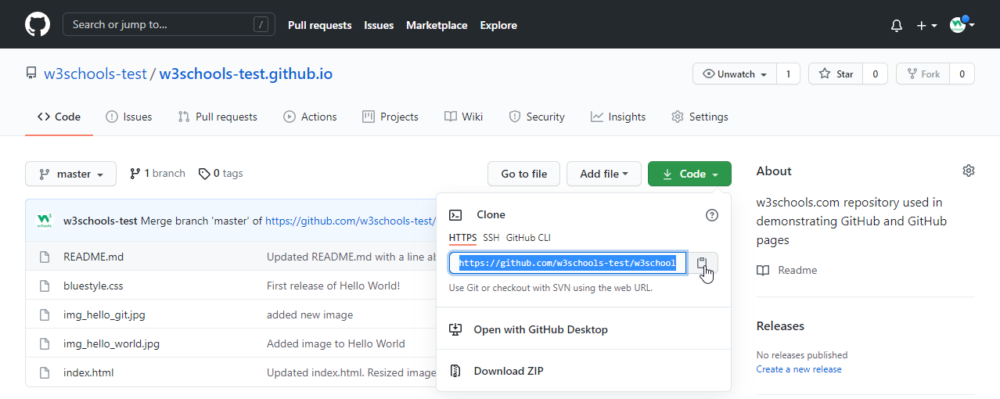Open your Git bash and clone the repository:
karak10@DESKTOP-P0FANNP:/mnt/c/Users/alexi/Desktop/myproject$ clone url
Cloning into 'w3schools-test.github.io'...
remote: Enumerating objects: 33, done.
remote: Counting objects: 100% (33/33), done.
remote: Compressing objects: 100% (15/15), done.
remote: Total 33 (delta 18), reused 33 (delta 18), pack-reused 0
Receiving objects: 100% (33/33), 94.79 KiB | 3.16 MiB/s, done.
Resolving deltas: 100% (18/18), done.
Take a look in your file system, and you will see a new directory named after the cloned project
karak10@DESKTOP-P0FANNP:/mnt/c/Users/alexi/Desktop/myproject$ ls
w3schools-test.github.io/
To specify a specific folder to clone to, add the name of the folder after the repository URL, like this: git clone https://github.com/w3schools-test/w3schools-test.github.io.git myfolder
Navigate to the new directory, and check the status:
karak10@DESKTOP-P0FANNP:/mnt/c/Users/alexi/Desktop/myproject$ cd w3schools-test.github.io
karak10@DESKTOP-P0FANNP:/mnt/c/Users/alexi/Desktop/myproject$ git status
On branch master
Your branch is up to date with 'origin/master'.
nothing to commit, working tree clean
And check the log to confirm that we have the full repository data:
karak10@DESKTOP-P0FANNP:/mnt/c/Users/alexi/Desktop/myproject$ git log
commit facaeae8fd87dcb63629f108f401aa9c3614d4e6 (HEAD -> master, origin/master, origin/HEAD)
Merge: e7de78f 5a04b6f
Author: w3schools-test
Date: Fri Mar 26 15:44:10 2021 +0100
Merge branch 'master' of https://github.com/w3schools-test/hello-world
commit e7de78fdefdda51f6f961829fcbdf197e9b926b6
Author: w3schools-test
Date: Fri Mar 26 15:37:22 2021 +0100
Updated index.html. Resized image
Configuring Remotes
So far, we have a full copy of a repository, whose origin we are not allowed to make changes to. Let's see how the remotes of this Git is set up:
karak10@DESKTOP-P0FANNP:/mnt/c/Users/alexi/Desktop/myproject$ git remote -v
origin https://github.com/w3schools-test/w3schools-test.github.io.git (fetch)
origin https://github.com/w3schools-test/w3schools-test.github.io.git (push)
We see that origin is set up to the original "w3schools-test" repository, we also want to add our own fork. First, we rename the original origin remote:
karak10@DESKTOP-P0FANNP:/mnt/c/Users/alexi/Desktop/myproject$ git remote rename origin upstream
karak10@DESKTOP-P0FANNP:/mnt/c/Users/alexi/Desktop/myproject$ git remote -v
upstream https://github.com/w3schools-test/w3schools-test.github.io.git (fetch)
upstream https://github.com/w3schools-test/w3schools-test.github.io.git (push)
Then fetch the URL of our own fork:
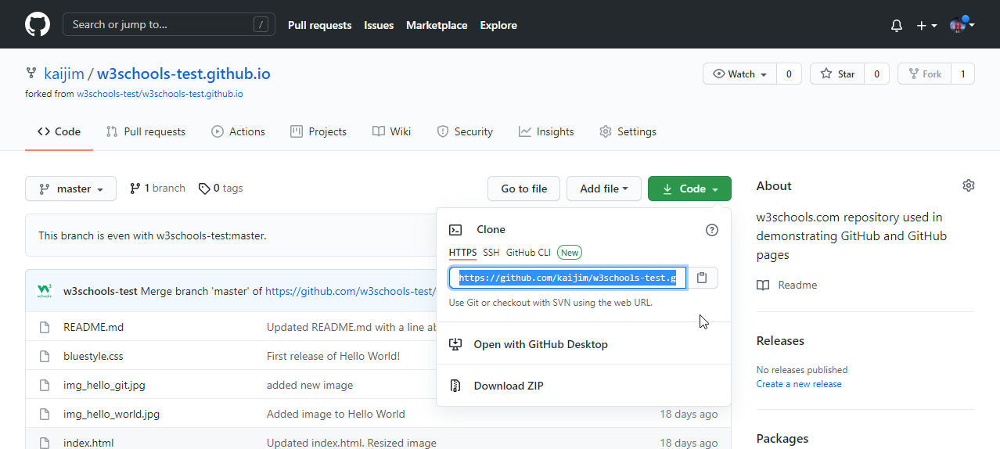And add that as origin:
karak10@DESKTOP-P0FANNP:/mnt/c/Users/alexi/Desktop/myproject$ git remote add origin url
karak10@DESKTOP-P0FANNP:/mnt/c/Users/alexi/Desktop/myproject$ git remote -v
origin https://github.com/kaijim/w3schools-test.github.io.git (fetch)
origin https://github.com/kaijim/w3schools-test.github.io.git (push)
upstream https://github.com/w3schools-test/w3schools-test.github.io.git (fetch)
upstream https://github.com/w3schools-test/w3schools-test.github.io.git (push)
Why did we do this you may ask. Well, according to Git naming conventions, it is recommended to name your own repository origin, and the one you forked upstream.
Now we have 2 remotes:
- origin - our own fork, where we have read and write access
- upstream - the original, where we have read-only access
Now we are going to make some changes to the code. In the next chapter, we will cover how we suggest those changes to the original repository.
Pull requests in Github
After we make the changes we want to our local git, and commit them, we can then push them to our GitHub fork:
karak10@DESKTOP-P0FANNP:/mnt/c/Users/alexi/Desktop/myproject$ git push origin
Enumerating objects: 8, done.
Counting objects: 100% (8/8), done.
Delta compression using up to 16 threads
Compressing objects: 100% (5/5), done.
Writing objects: 100% (5/5), 393.96 KiB | 32.83 MiB/s, done.
Total 5 (delta 0), reused 0 (delta 0), pack-reused 0
To https://github.com/kaijim/w3schools-test.github.io.git
facaeae..ebb1a5c master -> master
if we go to GitHub, we can see that our repository has a new commit. We can now send a Pull Request to the original repository:
Click that and create a pull request:
Remember to add an explanation for the administrators.
Pull Request is sent:
Approving Pull Requests
Now any member with access can see the Pull Request when they see the original repository:
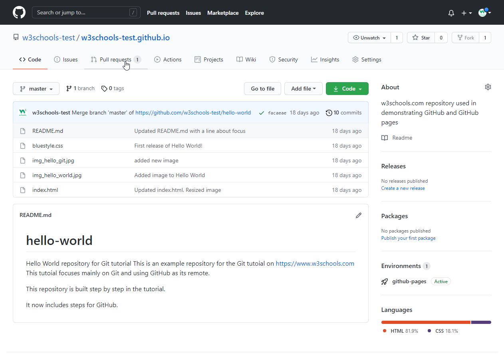And they can see the proposed changes:
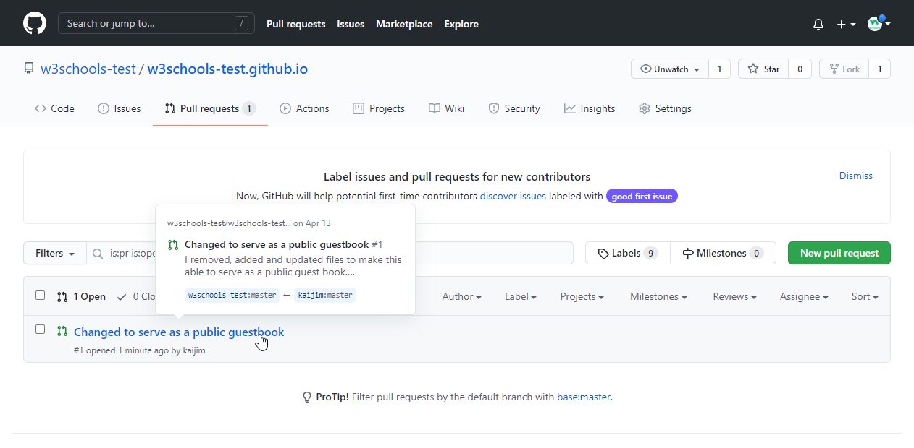Comment on the changes and merge:
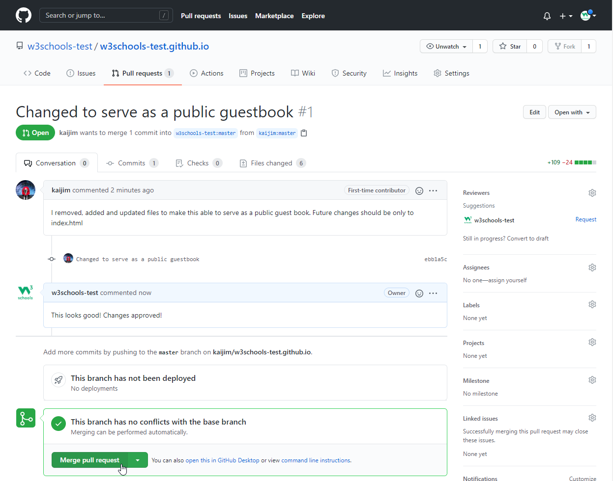Confirm:
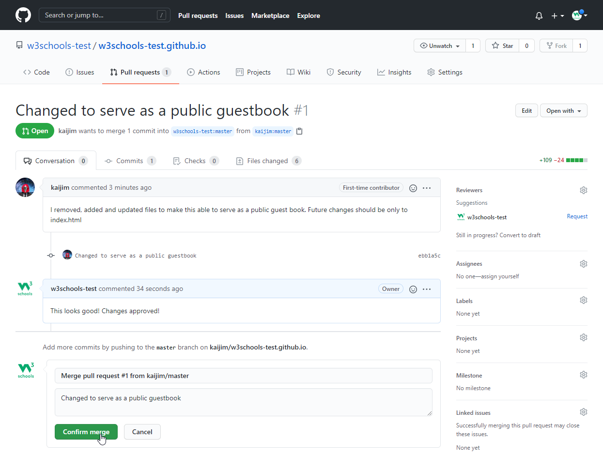And changes have been merged with master:
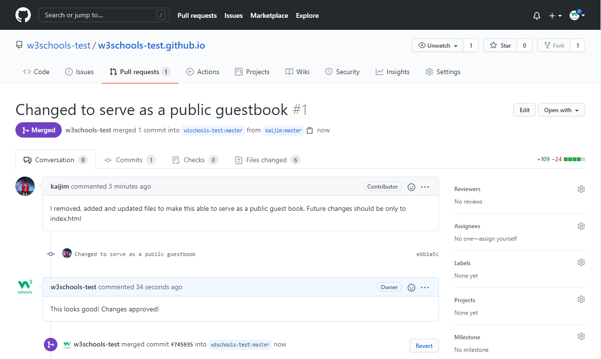Git .gitignore
When sharing your code with others, there are often files or parts of your project, you do not want to share.
Examples
- log files
- temporary files
- hidden files
- personal files
- etc
Git can specify which files or parts of your project should be ignored by Git using a .gitignore file. Git will not track files and folders specified in .gitignore. However, the .gitignore file itself IS tracked by Git.
To create a .gitignore file, go to the root of your local Git, and create it:
karak10@DESKTOP-P0FANNP:/mnt/c/Users/alexi/Desktop/myproject$ touch .gitignore
Now open the file using a text editor. We are just going to add two simple rules:
- Ignore any files with the .log extension
- Ignore everything in any directory named temp
# ignore ALL .log files
*.log
# ignore ALL files in ANY directory named temp
temp/
Now all .log files and anything in temp folders will be ignored by Git.
It is also possible to have additional .gitignore files in subdirectories. These only apply to files or folders within that directory.
For more rules you can use to specify which files to be ignored you can check out this site.
Git Security SSH
Up to this point, we have used HTTPS to connect to our remote repository. HTTPS will usually work just fine, but you should use SSH if you work with unsecured networks. And sometimes, a project will require that you use SSH.
What is SSH
SSH is a secure shell network protocol that is used for network management, remote file transfer, and remote system access. SSH uses a pair of SSH keys to establish an authenticated and encrypted secure network protocol. It allows for secure remote communication on unsecured open networks.
SSH keys are used to initiate a secure "handshake". When generating a set of keys, you will generate a "public" and "private" key. The "public" key is the one you share with the remote party. Think of this more as the lock. The "private" key is the one you keep for yourself in a secure place. Think of this as the key to the lock.
SSH keys are generated through a security algorithm. It is all very complicated, but it uses prime numbers, and large random numbers to make the public and private key. It is created so that the public key can be derived from the private key, but not the other way around. This way, anyonce can use your public kay to encypt data and send it to you, but only you can decrypt the data with your private key, not even the person sending the data is able to do this. That's what we call assymetrical encryption and I have talked more about it in my computer science notes.
Generating an SSH Key Pair
In the command line for Linux, Apple, and in the Git Bash for Windows, you can generate an SSH key. Let's go through it, step by step. Start by creating a new key, using your email as a label:
karak10@DESKTOP-P0FANNP:/mnt/c/Users/alexi/Desktop/myproject$ ssh-keygen -t rsa -b 4096 -C "test@w3schools.com"
Generating public/private rsa key pair.
Enter file in which to save the key (/Users/user/.ssh/id_rsa):
Created directory '/Users/user/.ssh'.
Enter passphrase (empty for no passphrase):
Enter same passphrase again:
Your identification has been saved in /Users/user/.ssh/id_rsa
Your public key has been saved in /Users/user/.ssh/id_rsa.pub
The key fingerprint is:
SHA256:******************************************* test@w3schools.com
The key's randomart image is:
+---[RSA 4096]----+
| |
| |
| |
| |
| |
| |
| |
| |
| |
+----[SHA256]-----+
So, let me now explain what the properties we used actually do. The first property we used was -t which stands for type. SSH supports several public key algorithms for authentication keys. We chose to use rsa type - an old algorithm based on the difficulty of factoring large numbers. Next we used the -b property, followed by a number. The -b property stands for bits, this option specifies the number of bits in the key. A key size of at least 2048 bits is recommended for RSA; 4096 bits is better. Lastly, we used the -c property, which stands for comment. This property sets a comment for the keyfile.
As you can see above, after we entered the command we were prompted with the following:
Enter file in which to save the key (/c/Users/user/.ssh/id_rsa):
Select a file location to save the key inside, or press "Enter" to use the default file location.
Enter passphrase (empty for no passphrase):
Enter same passphrase again:
Entering a secure passphrase will create an additional layer of security. Preventing anyone who gains access to the computer to use that key without the passphrase. However, it will require you to supply the passphrase anytime the SSH key is used.
Now we add this SSH key pair to the SSH-Agent (using the file location from above):
karak10@DESKTOP-P0FANNP:/mnt/c/Users/alexi/Desktop/myproject$ ssh-add /Users/user/.ssh/id_rsa
Enter passphrase for /Users/user/.ssh/id_rsa:
Identity added: /Users/user/.ssh/id_rsa (test@w3schools.com)
You will be prompted to supply the passphrase, if you added one. Now the SSH key pair is ready to use.
The ssh-agent is a program to hold private keys used for public key authentication. Through use of environment variables the agent can be located and automatically used for authentication when logging in to other machines using ssh. In order to understand why that's needed you need to first understand how SSH works.
Copy the SSH Public Key
So far, we have created an SSH key pair. Now we will use the "clip < path" command to copy the public key to our clipboard:
karak10@DESKTOP-P0FANNP:/mnt/c/Users/alexi/Desktop/myproject$ clip < /Users/user/.ssh/id_rsa.pub
After this you should go to GitHub, navigate to the top left corner, click your profile, and select: Settings:
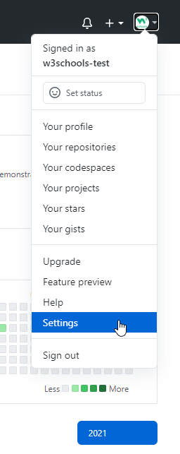Then select "SSH and GPG keys". and click the "New SSH key" button:
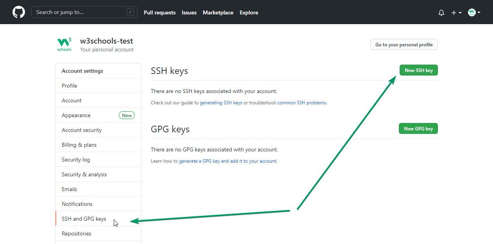Select a title, and paste the public SSH key into the "Key" field, and click "Add SSH Key":
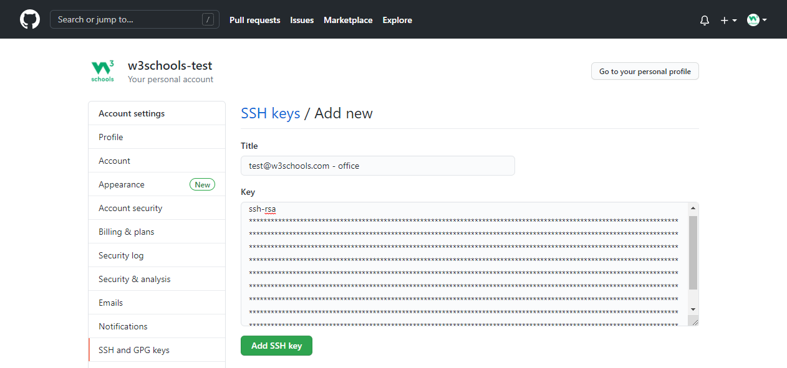You will be prompted to supply your GitHub password. Then you will see your new SSH key added:
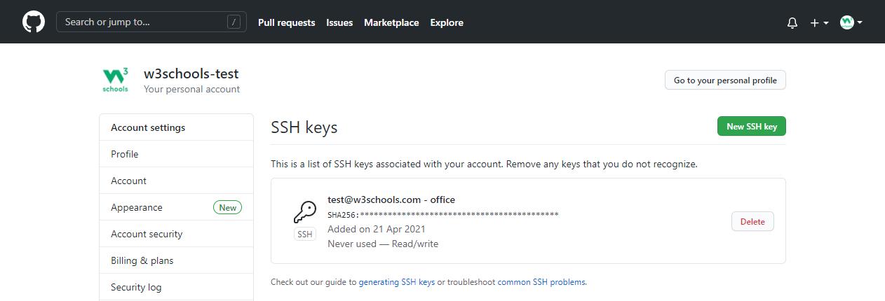Test SSH Connection to GitHub
Now we can test our connection via SSH to GitHub:
karak10@DESKTOP-P0FANNP:/mnt/c/Users/alexi/Desktop/myproject$ ssh -T git@github.com
The authenticity of host 'github.com (140.82.121.3)' can't be established.
RSA key fingerprint is SHA256:nThbg6kXUpJWGl7E1IGOCspRomTxdCARLviKw6E5SY8.
Are you sure you want to continue connecting (yes/no/[fingerprint])? yes
Warning: Permanently added 'github.com,140.82.121.3' (RSA) to the list of known hosts.
Hi w3schools-test! You've successfully authenticated, but GitHub does not provide shell access.
If the last line contains your username on GitHub, you are successfully authenticated!
Add New GitHub SSH Remote
Now we can add a new remote via SSH to our Git. First, get the SSH address from our repository on GitHub:
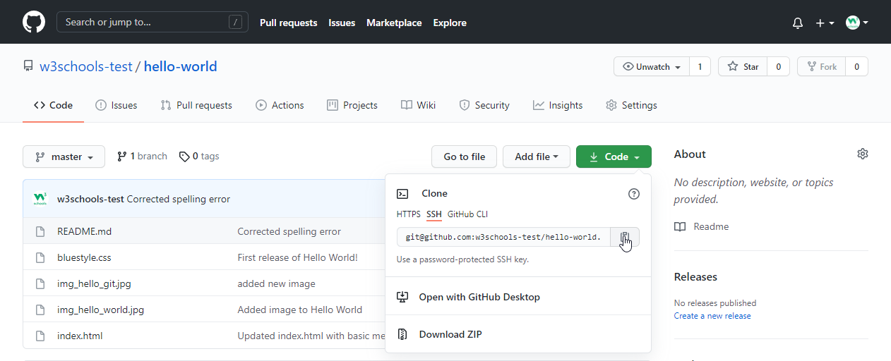Then use that address to add a new origin:
karak10@DESKTOP-P0FANNP:/mnt/c/Users/alexi/Desktop/myproject$ git remote add ssh-origin url
Git Revert
revert is the command we use when we want to take a previous commit and add it as a new commit, keeping the log intact.
Step 1: Find the previous commit:
Step 2: Use it to make a new commit:
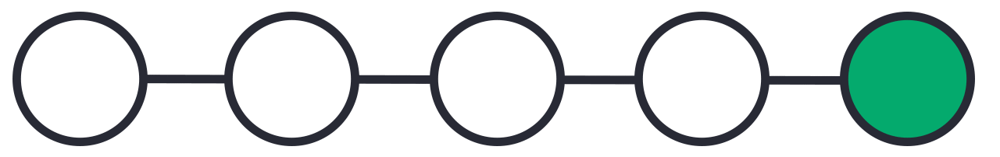Let's make a new commit, where we have "accidentally" deleted a file:
karak10@DESKTOP-P0FANNP:/mnt/c/Users/alexi/Desktop/myproject$ git commit -m "Just a regular update, definitely no accidents here..."
[master 16a6f19] Just a regular update, definitely no accidents here...
1 file changed, 0 insertions(+), 0 deletions(-)
delete mode 100644 img_hello_git.jpg
Now we have a part in our commit history we want to go back to. Let's try and do that with revert.
First thing, we need to find the point we want to return to. To do that, we need to go through the log. To avoid the very long log list, we are going to use the --oneline option, which gives just one line per commit showing:
- The first seven characters of the commit hash
- the commit message
So let's find the point we want to revert:
karak10@DESKTOP-P0FANNP:/mnt/c/Users/alexi/Desktop/myproject$ log --oneline
52418f7 (HEAD -> master) Just a regular update, definitely no accidents here...
9a9add8 (origin/master) Added .gitignore
81912ba Corrected spelling error
3fdaa5b Merge pull request #1 from w3schools-test/update-readme
836e5bf (origin/update-readme, update-readme) Updated readme for GitHub Branches
daf4f7c (origin/html-skeleton, html-skeleton) Updated index.html with basic meta
facaeae (gh-page/master) Merge branch 'master' of https://github.com/w3schools-test/hello-world
e7de78f Updated index.html. Resized image
5a04b6f Updated README.md with a line about focus
d29d69f Updated README.md with a line about GitHub
e0b6038 merged with hello-world-images after fixing conflicts
1f1584e added new image
dfa79db updated index.html with emergency fix
0312c55 Added image to Hello World
09f4acd Updated index.html with a new line
221ec6e First release of Hello World!
We want to revert to the previous commit: 52418f7 (HEAD -> master) Just a regular update, definitely no accidents here..., and we see that it is the latest commit.
Git Revert HEAD
We revert the latest commit using git revert HEAD (revert the latest change, and then commit), adding the option --no-edit to skip the commit message editor (getting the default revert message):
karak10@DESKTOP-P0FANNP:/mnt/c/Users/alexi/Desktop/myproject$ git revert HEAD --no-edit
[master e56ba1f] Revert "Just a regular update, definitely no accidents here..."
Date: Thu Apr 22 10:50:13 2021 +0200
1 file changed, 0 insertions(+), 0 deletions(-)
create mode 100644 img_hello_git.jpg
Now let's check the log again:
karak10@DESKTOP-P0FANNP:/mnt/c/Users/alexi/Desktop/myproject$ git log --oneline
e56ba1f (HEAD -> master) Revert "Just a regular update, definitely no accidents here..."
52418f7 Just a regular update, definitely no accidents here...
9a9add8 (origin/master) Added .gitignore
81912ba Corrected spelling error
3fdaa5b Merge pull request #1 from w3schools-test/update-readme
836e5bf (origin/update-readme, update-readme) Updated readme for GitHub Branches
daf4f7c (origin/html-skeleton, html-skeleton) Updated index.html with basic meta
facaeae (gh-page/master) Merge branch 'master' of https://github.com/w3schools-test/hello-world
e7de78f Updated index.html. Resized image
5a04b6f Updated README.md with a line about focus
d29d69f Updated README.md with a line about GitHub
e0b6038 merged with hello-world-images after fixing conflicts
1f1584e added new image
dfa79db updated index.html with emergency fix
0312c55 Added image to Hello World
09f4acd Updated index.html with a new line
221ec6e First release of Hello World!
To revert to earlier commits, use git revert HEAD~x (x being a number. 1 going back one more, 2 going back two more, etc.)
On the next page, we'll go over git reset, which brings the repository back to an earlier state in the commits without making a new commit.
Git Reset
reset is the command we use when we want to move the repository back to a previous commit, discarding any changes made after that commit.
Step 1: Find the previous commit:
Step 2: Move the repository back to that step:
After the previous chapter, we have a part in our commit history we could go back to. So let's find the point we want to reset to first:
karak10@DESKTOP-P0FANNP:/mnt/c/Users/alexi/Desktop/myproject$ git log --oneline
e56ba1f (HEAD -> master) Revert "Just a regular update, definitely no accidents here..."
52418f7 Just a regular update, definitely no accidents here...
9a9add8 (origin/master) Added .gitignore
81912ba Corrected spelling error
3fdaa5b Merge pull request #1 from w3schools-test/update-readme
836e5bf (origin/update-readme, update-readme) Updated readme for GitHub Branches
daf4f7c (origin/html-skeleton, html-skeleton) Updated index.html with basic meta
facaeae (gh-page/master) Merge branch 'master' of https://github.com/w3schools-test/hello-world
e7de78f Updated index.html. Resized image
5a04b6f Updated README.md with a line about focus
d29d69f Updated README.md with a line about GitHub
e0b6038 merged with hello-world-images after fixing conflicts
1f1584e added new image
dfa79db updated index.html with emergency fix
0312c55 Added image to Hello World
09f4acd Updated index.html with a new line
221ec6e First release of Hello World!
We want to return to the commit: 9a9add8 (origin/master) Added .gitignore, the last one before we started to mess with things.
We reset our repository back to the specific commit using git reset commithash (commithash being the first 7 characters of the commit hash we found in the log):
karak10@DESKTOP-P0FANNP:/mnt/c/Users/alexi/Desktop/myproject$ git reset 9a9add8
Now let's check the log again:
karak10@DESKTOP-P0FANNP:/mnt/c/Users/alexi/Desktop/myproject$ git log --oneline
9a9add8 (HEAD -> master, origin/master) Added .gitignore
81912ba Corrected spelling error
3fdaa5b Merge pull request #1 from w3schools-test/update-readme
836e5bf (origin/update-readme, update-readme) Updated readme for GitHub Branches
daf4f7c (origin/html-skeleton, html-skeleton) Updated index.html with basic meta
facaeae (gh-page/master) Merge branch 'master' of https://github.com/w3schools-test/hello-world
e7de78f Updated index.html. Resized image
5a04b6f Updated README.md with a line about focus
d29d69f Updated README.md with a line about GitHub
e0b6038 merged with hello-world-images after fixing conflicts
1f1584e added new image
dfa79db updated index.html with emergency fix
0312c55 Added image to Hello World
09f4acd Updated index.html with a new line
221ec6e First release of Hello World!
Warning: Messing with the commit history of a repository can be dangerous. It is usually ok to make these kinds of changes to your own local repository. However, you should avoid making changes that rewrite history to remote repositories, especially if others are working with them.
Git Undo Reset
Even though the commits are no longer showing up in the log, it is not removed from Git. If you know the commit hash you can reset to it:
karak10@DESKTOP-P0FANNP:/mnt/c/Users/alexi/Desktop/myproject$ git reset e56ba1f
Now let's check the log again:
karak10@DESKTOP-P0FANNP:/mnt/c/Users/alexi/Desktop/myproject$ git log --oneline
e56ba1f (HEAD -> master) Revert "Just a regular update, definitely no accidents here..."
52418f7 Just a regular update, definitely no accidents here...
9a9add8 (origin/master) Added .gitignore
81912ba Corrected spelling error
3fdaa5b Merge pull request #1 from w3schools-test/update-readme
836e5bf (origin/update-readme, update-readme) Updated readme for GitHub Branches
daf4f7c (origin/html-skeleton, html-skeleton) Updated index.html with basic meta
facaeae (gh-page/master) Merge branch 'master' of https://github.com/w3schools-test/hello-world
e7de78f Updated index.html. Resized image
5a04b6f Updated README.md with a line about focus
d29d69f Updated README.md with a line about GitHub
e0b6038 merged with hello-world-images after fixing conflicts
1f1584e added new image
dfa79db updated index.html with emergency fix
0312c55 Added image to Hello World
09f4acd Updated index.html with a new line
221ec6e First release of Hello World!
Git commit --amend
commit --amend is used to modify the most recent commit. It combines changes in the staging environment with the latest commit, and creates a new commit. This new commit replaces the latest commit entirely.
One of the simplest things you can do with --amend is to change a commit message. Let's update the README.md and commit:
karak10@DESKTOP-P0FANNP:/mnt/c/Users/alexi/Desktop/myproject$ git commit -m "Adding plines to reddme"
[master 07c5bc5] Adding plines to reddme
1 file changed, 3 insertions(+), 1 deletion(-)
Now let's check the log:
karak10@DESKTOP-P0FANNP:/mnt/c/Users/alexi/Desktop/myproject$ git log --oneline
07c5bc5 (HEAD -> master) Adding plines to reddme
9a9add8 (origin/master) Added .gitignore
81912ba Corrected spelling error
3fdaa5b Merge pull request #1 from w3schools-test/update-readme
836e5bf (origin/update-readme, update-readme) Updated readme for GitHub Branches
daf4f7c (origin/html-skeleton, html-skeleton) Updated index.html with basic meta
facaeae (gh-page/master) Merge branch 'master' of https://github.com/w3schools-test/hello-world
e7de78f Updated index.html. Resized image
5a04b6f Updated README.md with a line about focus
d29d69f Updated README.md with a line about GitHub
e0b6038 merged with hello-world-images after fixing conflicts
1f1584e added new image
dfa79db updated index.html with emergency fix
0312c55 Added image to Hello World
09f4acd Updated index.html with a new line
221ec6e First release of Hello World!
Oh no! the commit message is full of spelling errors. Embarrassing. Let's amend that:
karak10@DESKTOP-P0FANNP:/mnt/c/Users/alexi/Desktop/myproject$ git commit --amend -m "Added lines to README.md"
[master eaa69ce] Added lines to README.md
Date: Thu Apr 22 12:18:52 2021 +0200
1 file changed, 3 insertions(+), 1 deletion(-))
And re-check the log:
karak10@DESKTOP-P0FANNP:/mnt/c/Users/alexi/Desktop/myproject$ git log --oneline
eaa69ce (HEAD -> master) Added lines to README.md
9a9add8 (origin/master) Added .gitignore
81912ba Corrected spelling error
3fdaa5b Merge pull request #1 from w3schools-test/update-readme
836e5bf (origin/update-readme, update-readme) Updated readme for GitHub Branches
daf4f7c (origin/html-skeleton, html-skeleton) Updated index.html with basic meta
facaeae (gh-page/master) Merge branch 'master' of https://github.com/w3schools-test/hello-world
e7de78f Updated index.html. Resized image
5a04b6f Updated README.md with a line about focus
d29d69f Updated README.md with a line about GitHub
e0b6038 merged with hello-world-images after fixing conflicts
1f1584e added new image
dfa79db updated index.html with emergency fix
0312c55 Added image to Hello World
09f4acd Updated index.html with a new line
221ec6e First release of Hello World!
We see the previous commit is replaced with our amended one!
Adding or modifying files with --amend works the same way as above. Just add them to the staging environment before committing.